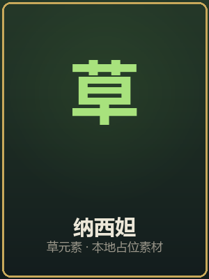
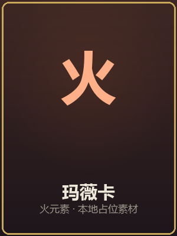
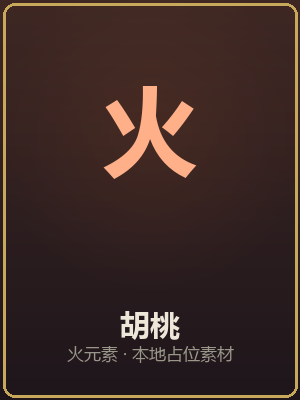
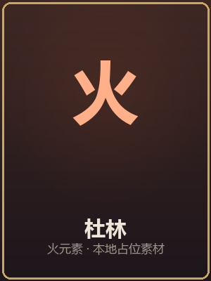
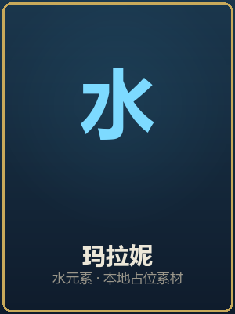
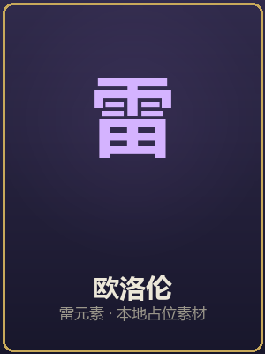
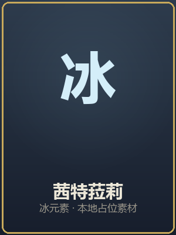
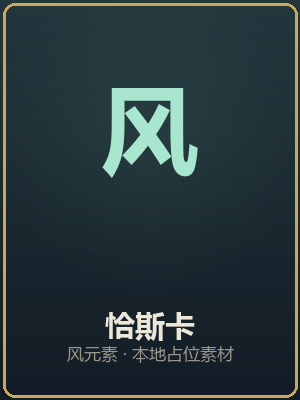
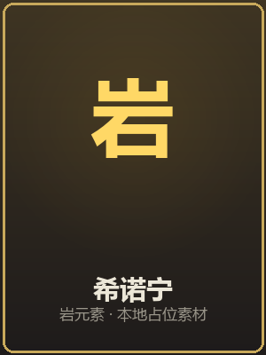

五大知识模块
对应提瓦特五国元素，遍历高中数学全部知识领域
风
函数与代数
蒙德 · 风元素
7个知识单元
集合、函数、三角函数、数列、不等式——代数思维的基石
探索 →
岩
几何与图形
璃月 · 岩元素
7个知识单元
立体几何、解析几何、圆锥曲线——空间与图形的智慧
探索 →
雷
概率与统计
稻妻 · 雷元素
4个知识单元
计数、概率、随机变量、统计——随机世界的规律
探索 →
水
导数与应用
枫丹 · 水元素
5个知识单元
极限、导数、定积分——变化与累积的精髓
探索 →
草
选修拓展
须弥 · 草元素
4个知识单元
复数、推理证明、极坐标、向量——数学的广度延伸
探索 →
焰
数学实验室
纳塔 · 火元素
6个互动实验NEW
公式变形可视化、抛物线滑块、单位圆占星、祈愿概率——亲手看见公式为什么成立
进入实验 →
修习之路
建议按此顺序修习，由基础到进阶，如旅行者周游七国般遍历数学世界
提瓦特使者
七国角色将伴你走过数学之旅
温迪
蒙德 · 风
钟离
璃月 · 岩
雷电将军
稻妻 · 雷

纳西妲
须弥 · 草
芙宁娜
枫丹 · 水

玛薇卡
纳塔 · 火
甘雨
月海 · 冰

胡桃
璃月 · 火

杜林
烬火 · 火

玛拉妮
纳塔 · 水

欧洛伦
纳塔 · 雷

茜特菈莉
纳塔 · 冰

恰斯卡
纳塔 · 风

希诺宁
纳塔 · 岩
5
大知识模块
27
个知识单元
280+
核心考点
3年
完整覆盖